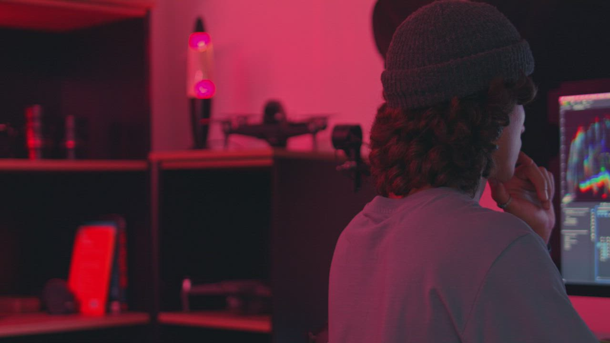
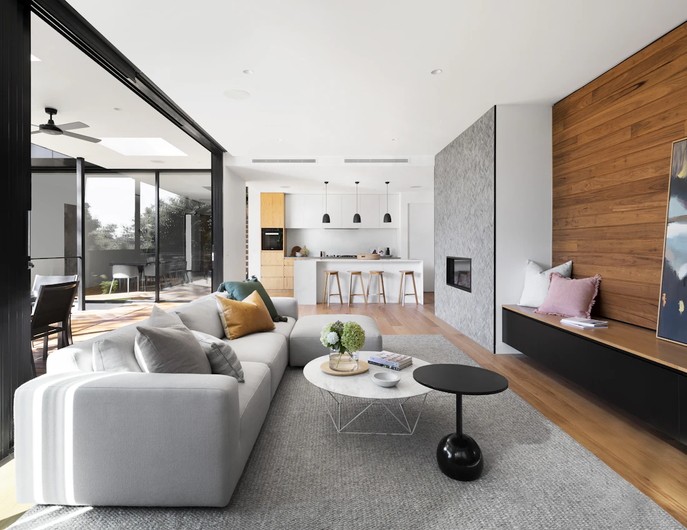

Reels · Concept
Short-form story edit
Vertical social video concept with a concise opening and clear visual rhythm.
Explore a selection of creative assets and production examples. Some items are illustrative concepts; project details and outcomes are not presented as client case studies.
Vertical social video concept with a concise opening and clear visual rhythm.

A production sample featuring the editing workspace and a polished visual finish.

An illustrative direction for presenting a campaign and its measurement approach.
Explore marketing ↗
Design direction exploring a consistent visual language for digital channels.
Discuss a design ↗
A visual concept for communicating tone and atmosphere in a lifestyle brand.
Discuss a concept ↗
Campaign concept focused on matching the message to the intended audience.
Explore ad support ↗These are example scenarios to show our approach; they do not claim actual client outcomes.
Problem: The offer is useful but the core message is hard to scan.
What we’d do: Clarify the audience and benefit, then develop concise copy and a consistent creative direction.
Intended result: A clearer, more cohesive campaign for review and testing.
Problem: Existing footage is not yet ready for short-form channels.
What we’d do: Identify strong moments, shape vertical edits and add readable captions.
Intended result: Platform-ready content variations, without implying guaranteed reach.
Let’s create work shaped around your goals, audience and brand.